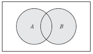
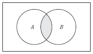
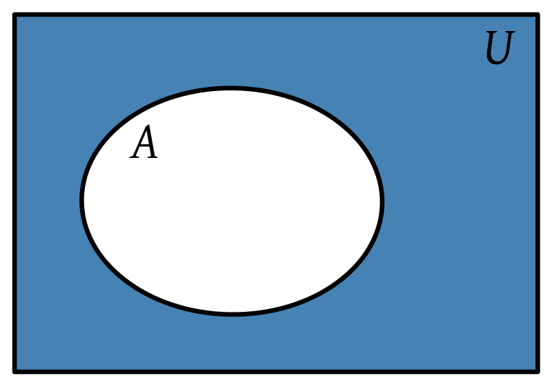
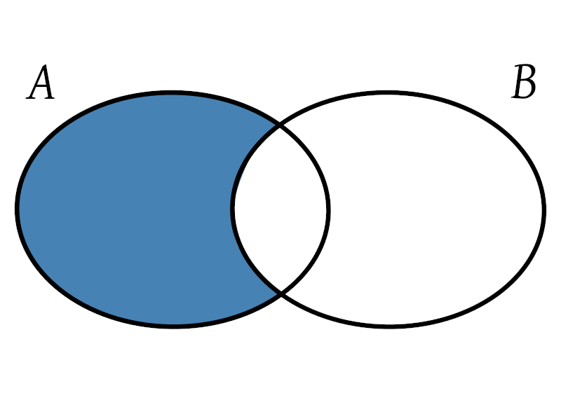
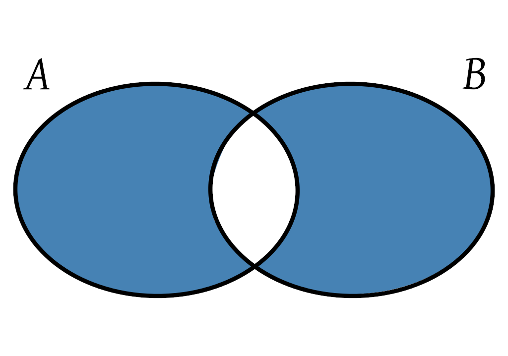
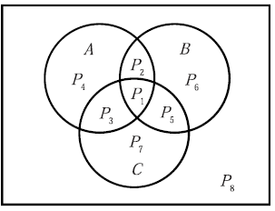
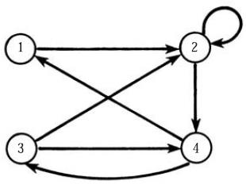
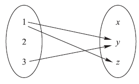
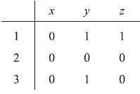

Teoria de conjuntos
Apuntes
Índice
1 Conjuntos
Un conjunto es una Colección bien definida de objetos, que se denominan elementos o miembros del conjunto. Usualmente las letras mayúsculas denotan a los conjuntos y las letras minúsculas denotan a los elementos del conjunto.
- \(a \in S\) denota que el elemento a pertenece al conjunto S.
- \(a \not \in S \) denota que el elemento NO pertenece al conjunto S.
2 Subconjunto
Se dice que A es un subconjunto de B si A está contenido en B o en otras palabras que B contiene a A. \( A \subseteq B \) o \( B \supseteq A \). Dos conjuntos son iguales si ambos tienen los mismos elementos o, equivalentemente, si cada uno está contenido en el otro.
A = B si y solo si \( A \subseteq B \) y \( B \subseteq A \)
3 Simbolos especiales
Los conjuntos numéricos usuales en matemáticas son:
- el conjunto de los números naturales \(\mathbb{N}\).
- números racionales \(\mathbb{Q}\).
- números enteros \(\mathbb{Z}\).
- números reales \(\mathbb{R}\).
- números complejos \(\mathbb{C}\).
La relacion entre estos grupos es la siguiente:
\[ \mathbb{N} \subset \mathbb{Z} \subset \mathbb{Q} \subset \mathbb{R} \subset \mathbb{C} \]
4 Operacion es de conjuntos
Existen unas operaciones básicas que permiten manipular los conjuntos y sus elementos, similares a las operaciones aritméticas, constituyendo el álgebra de conjuntos:
4.1 Union
La unión de dos conjuntos A y B, es el conjunto de todos los elementos que pertenecen a A o a B, es decir:

Figura 1: \(A \cup B = \{x|x \in A~o~x \in B \}\)
4.2 Intersección
La intesección de dos conjuntos A y B, es el conjunto de todos los elementos que pertenecen tanto a A como a B, es decir:

Figura 2: \( A \cap B \{x|x \in A~y~x \in B \} \)
4.3 Complemento (Complemento Absoluto)
El complemento absoluto o simplemente complemento de un conjunto A es el conjunto de elementos que pertenecen a U pero no pertenencen a A:
Dado un conjunto A, su complementario es el conjunto formado por los elementos que no pertenecen a A.

Figura 3: \(A^C = \{ x | x \in U, x \not \in A \} \)
4.4 Diferencia de conjuntos (Complemento relativo)
La diferencia entre A y B también se denomina complemento relativo de B en A, y se denota \(C_AB\), cuando el segundo es un subconjunto del primero.
El complemento relativo de un conjunto B respecto de un un conjunto B o la diferencia de A y B, es el conjunto de elementos que pertenecen a A pero no pertenecen a B:

Figura 4: \(A \backslash B = \{ x | x \in A, x \not\in B \} \)
4.5 Diferencias simétrica
Dados dos conjuntos A y B, su diferencia simétrica, A Δ B, es un conjunto que contiene los elementos de A y los de B, excepto los que son comunes a ambos.
La diferencia simétrica de los conjuntos A y B consta de los elementos que pertenecen a A o a B pero no a ambos:

\(A \bigoplus B = (A \cup B) \backslash (A \cap B) \)
o
\(A \bigoplus B = (A \backslash B) \cup (B \backslash A) \)
5 Productos fundamentales
\[ \begin{matrix} P_1 = A \cap B \cap C & ~ & P_2 = A \cap B \cap C^C \\ P_3 = A \cap B^C \cap C & ~ & P_4 = A \cap B^C \cap C^C \\ P_5 = A^C \cap B \cap C & ~ & P_6 = A^C \cap B \cap C^C \\ P_7 = A^C \cap B^C \cap C^C & ~ & P_8 = A^C \cap B^C \cap C^C \\ \end{matrix} \]

6 Representación grafica de las relaciones
6.1 Grafo dirigido
Para representar una relación R sobre un solo conjunto A.
A={1,2,3,4},
R={(1,2),(2,2),(2,4),(3,2),(3,4),(4,1),(4,3)}

6.2 Diagrama sagital
A={1,2,3}, B={x,y,z}
R={(1,y),(1,z),(3,y)}

6.3 Matriz de relación
